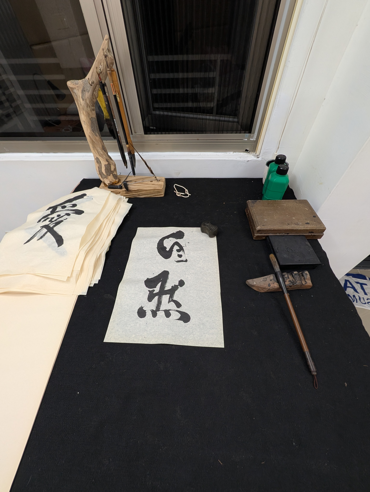
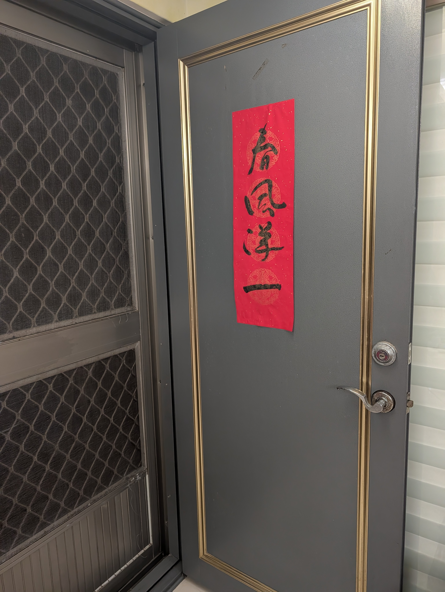
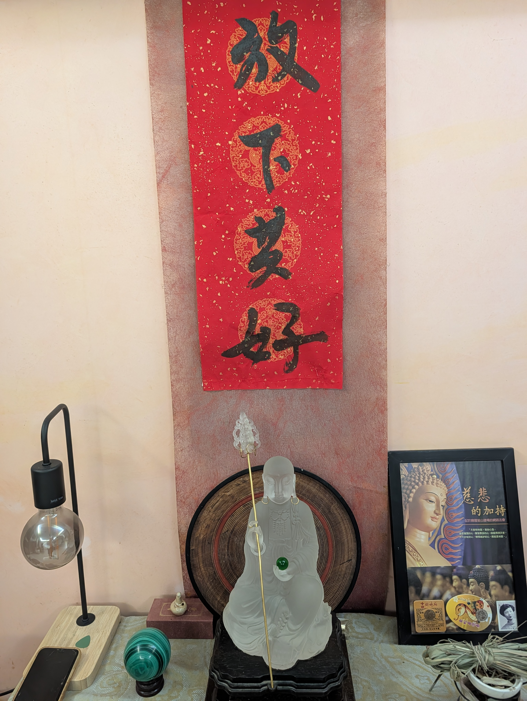
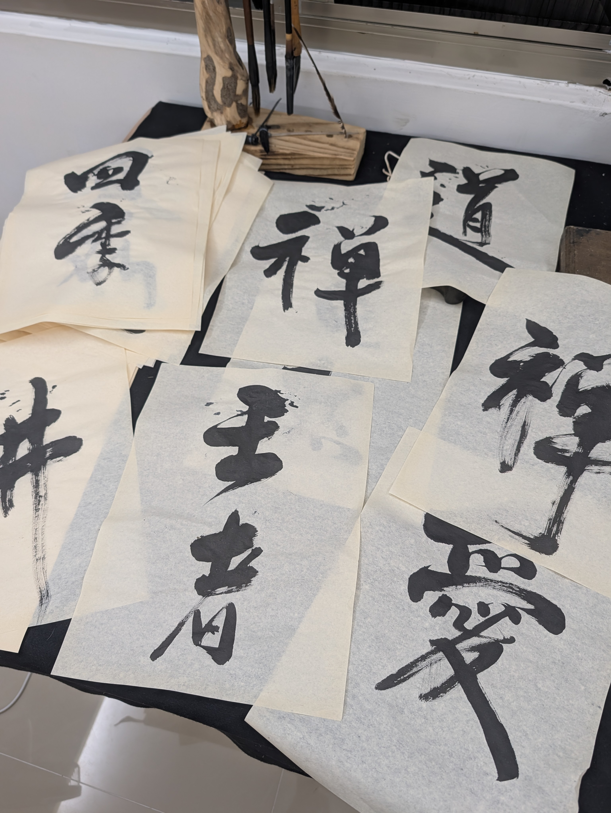

捨棄比較美醜 ‧ 揮灑當下心境 ‧ 重建獨特個人風格
我們自幼被灌輸楷書的工整與點畫規矩，卻在無止境的「像不像、美不美」中丟失了寫字的喜悅與真實的自性。在都蘭的山海微風裡，提起毛筆，讓呼吸與墨韻自由流淌——字即是心，每一筆都是無法複製的生命線條。
都蘭共學堂 ‧ 心靈書寫課
「不求工整，但求真誠；
不求悅人，但求自得。」
將書法從古代科舉與刻板規訓中解放出來，成為自我覺察與性靈成長的日常修持
傳統的「側、勒、努、趯、策、掠、啄、磔」往往讓初學者未提筆便心生畏懼。在這裡，我們放下死板的筆順與起承轉折。毛筆只是心靈意念的延伸，順應呼吸與當下直覺，自由落筆，不被千百年的教條所綁架。
寫字的過程就是靜心觀照。手腕的鬆與緊、墨色的濃與淡、線條的急與緩，如實映照著此時此刻你的內心狀態。在每一次沉靜的落筆中，洗淨外在紛擾，重新連結最真實、最質樸的自性。
大自然中的老樹枯藤、海浪巨石，從不比較誰更完美。告別「寫得美或醜」、「像不像名家」的焦慮批判。每一個字都是生命獨一無二的痕跡，不論粗獷、拙趣、纖細或狂放，皆有其不可替代的生命力。
從都蘭的大山大海、山風海濤中汲取筆意。將你的人生閱歷、情感體驗化為線條的筋骨與神采。不摹仿他人，只忠於自我，建立專屬於你、無可取代的獨特書寫風骨。
靜心體會筆墨在宣紙上的自由呼吸與生命節奏

放下規則束縛，以最自然的呼吸引領筆鋒遊走於宣紙之上。

不求圓熟工整，在看似粗拙的線條中展現真實飽滿的生命力。

都蘭浪濤的澎湃與山嵐的悠遠，化為筆下蒼茫流暢的氣韻。

不盲從任何名家筆意，長養專屬於自己的精神標竿與書寫風格。
教室不設考試、不評名次、不糾正所謂的「標準筆法」。在茶香與山海清音中，我們為每位學員營造無壓力、被全然接納的創作氛圍。
「當你不再試圖寫出『好字』的那一刻，真正的書法才剛開始。」